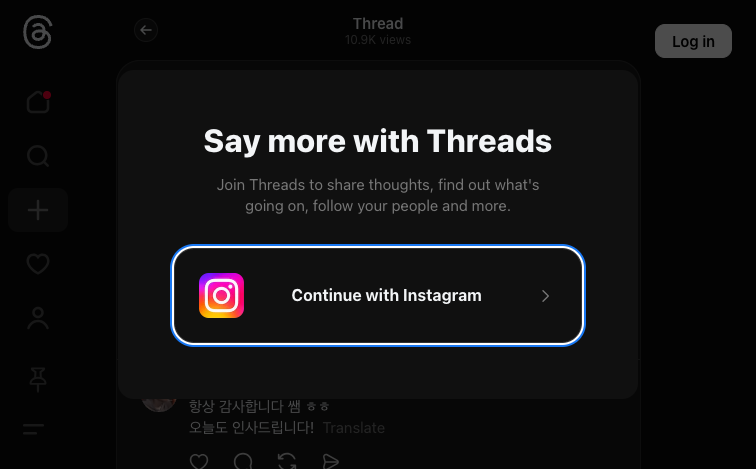

고졸퇴사자가 방구석컴퓨터 1대로 달러버는 방법
Public GitHub Pages export · full wiki body rendered · raw files excluded
고졸퇴사자가 방구석컴퓨터 1대로 달러버는 방법
Source candidate from News-Links/2026-04-25 시그마봇 시세차익 달러벌기/README.md
Source Content
고졸퇴사자가 방구석컴퓨터 1대로 달러버는 방법
원본: https://www.threads.com/@sisenamza92/post/DXif9EUn157
작성자: @sisenamza92 · 8시간 전 · 조회 10.9K
⚠️ 주의 메모 (자비스)
전형적인 시그마봇 시세차익(arbitrage) 강의 마케팅 패턴. "기수 신청" 댓글로 미루어 유료 강의/리퍼럴 사업 가능성 높음. 실제 거래소 간 차익거래는 수수료·전송시간·슬리피지 고려 시 회당 2만원 마진은 비현실적. 정보 수집 차원에서만 보관.
본문 (원문)
고졸퇴사자가 방구석컴퓨터 1대로 달러버는 방법
- 컴퓨터 켜고 시그마봇 켜라
- 8개 거래소 시세차익 실시간 확인
- 싼곳에 사서 비싸게 팔기 (회당평균 2만원 마진)
- 이걸 하루에 10~20회 반복
- 하루 세시간만 컴퓨터 앞에있어라
반응
- 36 likes / 2 reposts / 4 replies / 4 shares
- 댓글: "4기수 신청완료햇어요" → 기수제 유료 강의 운영 추정
- 댓글: "항상 감사합니다 쌤 ㅎㅎ" → 추종자 형성된 계정
관련 게시물 (같은 계정)
3일 전 게시물에서 동일한 내용 반복:
- "돈 없고 막막하면 눈 딱 감고 2주만 해봐"
- 동일한 5단계 + "숙련시켜서 하루30만원 벌기"
- 221 likes / 13 reposts / 44 replies / 57 shares
→ 동일 메시지 반복 노출로 후킹하는 마케팅 전략
분석 (자비스)
| 항목 | 평가 |
|---|---|
| 사실성 | ❌ 회당 2만원 × 20회 = 일 40만원은 비현실적 |
| 의도 | ⚠️ "기수 신청" 댓글 → 유료 강의/리퍼럴 마케팅 |
| 리스크 | ⚠️ 시그마봇 = 알려진 차익거래 봇 마케팅 키워드 |
| 가치 | 정보 수집 차원, 실행 권장 ❌ |
스크린샷

Source Trace
News-Links/2026-04-25 시그마봇 시세차익 달러벌기/README.md